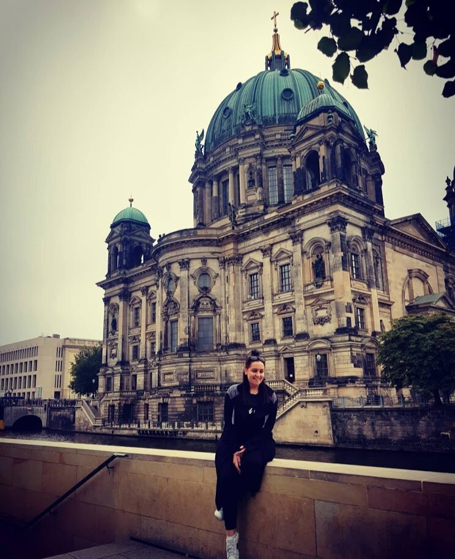
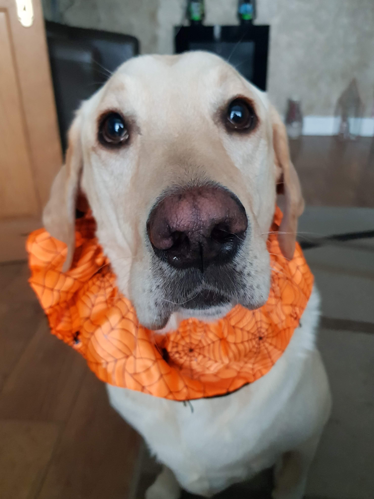
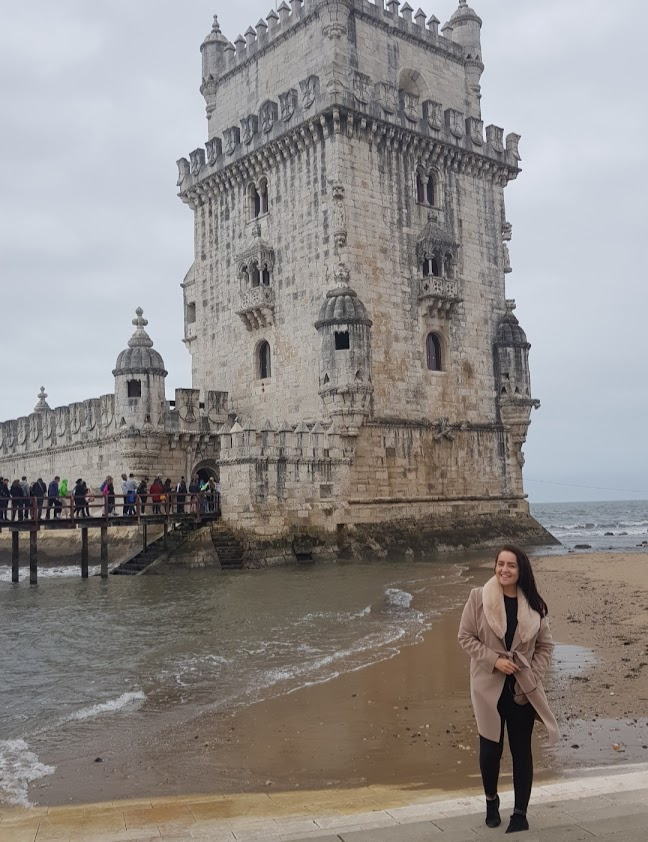

Hobbies/MyFavorite Things
- Travelling
- I LOVE to travel. I have been to some amazing countries. Barcelona, Berlin, France, Budapest, Poland to name a few.
I have also travelled to The USA. Las Vegas, Los Angeles, Nevada, Wisconsin and more. And yes, I went to Vegas and did not spend a single cent on
gambling (because I don't know how to).
I love city breaks more than long sunny holidays. I am not one for the sun,
Autumn/Winter season forever please! Next on the cards is New York City, for my 30th birthday next year.
- Cleaning
- It sounds weird but I just love to clean, who admits that? But honestly, it helps me think and I think it relaxes me.
I live with my sister, brother and a dog and cat - so cleaning is a must. I enjoy it, as I feel when an environment
is clean, you feel happy motivated and healthy. And, you never know what you have until you clean a room.
A clean space - a clear head.
- Nature
- I'll be cliche and say I like long walks by the beach.. No, but honestly. A nice refreshing walk
by the sea air is my thing. One of my favorite spots in the whole world is Dun Laoighre pier. Pier walks in the early morning or
late evening are one of lifes simple pleasures. If I'm not walking on some of Dublin's piers, I'm either in an open
green space surrounded by nature or up the top of a mountain somewhere. Mount Pelier Hill is a beautiful walk.
- Pets
- Cue the crazy dog lady. I have a 4 year old Labrador/Retriever named Baxter. He is honestly like
a child. In fairness, I have him spoilt so I can't complain about it. My sister and brother got him for me as a present and
I can honesty say, one of the best things to ever happen me. I love animals and I don't think we deserve their kind hearted nature.
I have a cat too, Bonnie is her name. Both dog and cat are the perfect housemates.
- Gadgets/Technology
- I couldn't be in the tech field without having a love of gadgets. The latest phone, laptop,
smart watch or even my wireless headphones, along with other things have become like my right arm. It's crazy to think of a world
without technology isn't it? Our electricity in the neighbourhood went the other day and I didn't know WHAT to do with myself!
The internet is amazing. The way that and technology are changing constantly at such a rapid rate will never cease to amaze me.
I love to read Tech Radar and other tech blogs to read or hear about the next big advance in the industry.



Website built by Sarah Sullivan, 2021.